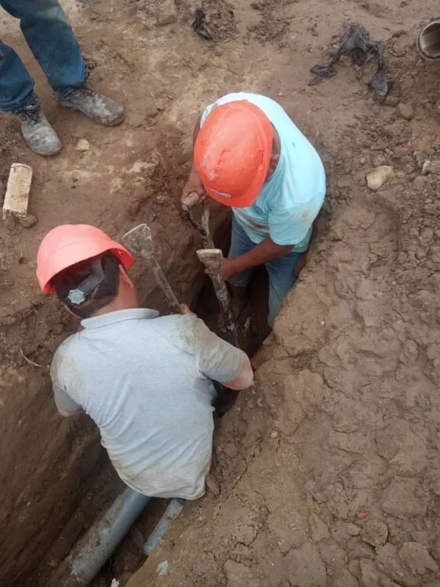

Pagos y trámites
Paga tu recibo cerca de tu casa, saca un duplicado sin hacer cola y mira qué necesitas para una conexión nueva.

Dónde pagar tu recibo
Solo necesitas tu número de suministro. Está en la parte de arriba de tu recibo.
Paga a tiempo y evita el corte y el cobro por reconexión.
EPSEL no cobra a domicilio. No le pagues a nadie que llegue a tu casa.
Bancos y agentes
- BCP
- BBVA
- Interbank
- Scotiabank
- Banco de la Nación
- Western Union
- Niubiz
- Yape
Con tarjeta, desde tu casa
En la oficina virtual, con tarjeta Visa.
En persona
En los centros de atención de EPSEL de tu localidad.
Oficina virtual
Hazlo desde el celular, sin ir a una oficina. Se abren en el sistema de EPSEL.
Conexión nueva y otros trámites
Los requisitos los fija SUNASS (Resolución N.º 011-2007-SUNASS-CD). Llévalos al local comercial de Av. Grau 451.
Conexión nueva de agua o desagüe
- Una solicitud al Gerente Comercial pidiendo la conexión.
- Copia de tu DNI.
- Un documento de la casa, el que tengas:
- casa inscrita: copia de la partida registral a tu nombre;
- casa no inscrita: certificado de búsqueda catastral y copia de la escritura de compraventa;
- título de COFOPRI;
- si eres poseedor: constancia de posesión de la municipalidad.
- Un croquis de cómo llegar a la casa.
- El pago por la inspección.
- Si lo hace otra persona por ti: carta poder especial y su DNI.
La casa debe tener al menos un punto de agua. En un lote sin construir, adjunta los planos sanitarios aprobados por la municipalidad.
Cambio de Nombre
- Solicitud dirigida al Gerente Comercial requiriendo el Cambio de Nombre.
Documentos de propiedad (Cualquiera de los cuatro siguientes):
- Para predios inscritos en Registros Públicos: Copia simple de la Partida Registral de inscripción de la propiedad del inmueble en la que figure como propietario actual el Solicitante.
Para predios no inscritos en Registros Públicos:
- Certificado de Búsqueda Catastral emitido por la Oficina de Registros Públicos de la jurisdicción pertinente, que certifique que el predio no ha sido inscrito.
- Copia simple de la Escritura Pública del contrato de compra-venta del inmueble en la que figure como propietario actual el solicitante.
- Título COFOPRI.
Los Poseedores informales:
- Copia simple del Certificado o Constancia de Posesión emitida por la Municipalidad de la circunscripción territorial correspondiente. Dichos documentos no deberán tener más de seis (06) meses de expedidos.
- Copia de DNI.
- Copia de último recibo de agua cancelado.
- Pago de derecho de inspección.
- En el caso de ser representante o tercero el que solicite el Cambio de Nombre del suministro el solicitante deberá adjuntar Carta Poder especial del propietario que autorice expresamente el trámite en mención adjuntando documentos de identidad.
Nota:
- Cuando la Partida Registral de inscripción de la propiedad del inmueble no indique el número de placa domiciliaria según el recibo de agua presentado se deberá adjuntar el Certificado de Placa Domiciliaria emitida por la Municipalidad de la circunscripción territorial correspondiente.
Cambio de Tarifa
- Solicitud dirigida al Gerente Comercial requiriendo el Cambio de Tarifa.
- Copia de DNI.
- Copia del último recibo de agua cancelado.
- Pago de derecho de inspección.
- En el caso de ser representante o tercero el que solicite el Cambio de Tarifa del suministro el solicitante deberá adjuntar copia de DNI.
Cambio de Diámetro
- Solicitud dirigida al Gerente Comercial requiriendo el Cambio de Diámetro.
- En caso de figurar como el titular del suministro (usuario) el trámite procederá sólo con la presentación del DNI de lo contrario deberá primero efectuar el Cambio de Nombre.
- Copia de DNI.
- Croquis de ubicación del inmueble.
- Pago de derecho de inspección.
- Copia de último recibo de agua cancelado.
- En el caso de ser representante o tercero el que solicite el Cambio de Nombre del suministro el solicitante deberá adjuntar Carta Poder especial del propietario que autorice expresamente el trámite en mención adjuntando documentos de identidad.
- Para edificios recién construidos se deberá adjuntar planos de Instalaciones Sanitarias aprobados por la Municipalidad de la circunscripción territorial correspondiente.
- Para edificios antiguos se deberá adjuntar copia de planos de instalaciones sanitarias visados por Ingeniero Civil o Sanitario según norma.
Nota:
- De ser factible su pedido, el solicitante deberá apersonarse al Área de Presupuestos del Dpto. de Catastro y Conexiones para la cancelación del presupuesto respectivo.
Corte Temporal
- Solicitud dirigida al Gerente Comercial requiriendo el Corte Temporal de Agua y Alcantarillado.
- En caso de figurar como el titular del suministro (usuario) el trámite procederá sólo con la presentación del DNI de lo contrario deberá primero efectuar el Cambio de Nombre.
- Copia de DNI.
- Pago de derecho de inspección.
- Copia de último recibo de agua cancelado.
- En el caso de ser representante o tercero el que solicite el Corte Temporal a nombre del propietario deberá adjuntar Carta Poder especial que autorice expresamente el trámite en mención adjuntando documentos de identidad.
Nota:
- De ser factible su pedido, el solicitante deberá apersonarse al Área de Presupuestos del Dpto. de Catastro y Conexiones para la cancelación del presupuesto respectivo.
- Se considera corte temporal al corte de la tubería de agua y taponeo del desagüe.
Corte Definitivo (Levantamiento)
- Solicitud dirigida al Gerente Comercial requiriendo el Corte Definitivo de Agua y Alcantarillado.
- En caso de figurar como el titular del suministro (usuario) el trámite procederá sólo con la presentación del DNI de lo contrario deberá primero efectuar el Cambio de Nombre.
- Copia de DNI.
- Pago de derecho de inspección.
- Copia de último recibo de agua cancelado.
- En el caso de ser representante o tercero el que solicite el Corte Temporal a nombre del propietario deberá adjuntar Carta Poder especial que autorice expresamente el trámite en mención adjuntando documentos de identidad.
Nota:
- De ser necesario posteriormente se alcanzará Oficio a la Municipalidad de la circunscripción territorial correspondiente solicitando la Autorización para rotura de vía.
- De ser factible su pedido, el solicitante deberá apersonarse al Área de Presupuestos del Dpto. de Catastro y Conexiones para la cancelación del presupuesto respectivo.
Rectificación de Nombre
- Copia de DNI.
- Copia de último recibo de agua cancelado.
Nota:
- Se considera rectificación de nombre sólo a la corrección de alguna letra(s).
Rectificación de Dirección
- Copia de DNI.
- Copia de último recibo de agua cancelado.
- Certificado de Placa Domiciliaria emitida por la Municipalidad de la circunscripción territorial correspondiente y visada por el Supervisor de Catastro del Dpto. de Catastro y Conexiones de EPSEL S.A.
Reubicación de Caja o Conexión de Agua o Desagüe
- Solicitud dirigida al Gerente Comercial requiriendo la Reubicación de Caja o Conexión de Agua y/o Alcantarillado.
- En caso de figurar como el titular del suministro (usuario el trámite procederá sólo con la presentación del DNI de la Copia de DNI.
- Copia de DNI.
- Croquis de ubicación del inmueble.
- Pago de derecho de inspección.
- Copia de último recibo de agua cancelado.
- En el caso de ser representante o tercero el que solicite la reubicación de caja o desagüe a nombre del propietario deberá adjuntar Carta Poder especial que autorice expresamente el trámite en mención adjuntando documentos de identidad.
Nota:
- De ser necesario posteriormente se alcanzará Oficio a la Municipalidad de la circunscripción territorial correspondiente solicitando la Autorización para rotura de vía o vereda.
- De ser factible su pedido, el solicitante deberá apersonarse al Área de Presupuestos del Dpto. de Catastro y Conexiones para la cancelación del presupuesto respectivo.
Instalación de Medidores Nuevos
- Presentar Solicitud Gerencia General de EPSEL S.A. en original y copia. (Solicitando instalación de medidor).
- Copia de último recibo de pago.
- Copia de la factura o boleta de la compra del medidor.
Compra:
- 01 Medidor ¾”.
- 02 Niples con tuerca ¾”.
- 01 Válvula de paso ¾”.
- 1/32 GLN pegamento para tubo.
- 01 Cinta teflón ¾”.
- 01 Adaptador ¾”.
- 01 Unión mixta ¾”.
Nota: Señor usuario, cuando reuna todos los requisitos presentarlos al Dpto.Area de Micro Medición para proceder a instalar su medidor.
Independización del Agua y Alcantarillado
- Solicitud dirigida al Gerente Comercial EPSEL S.A. Solicitando la Independización del Servicio de Agua y Alcantarillado.
- Copia Literal del inmueble expedida por registros Publicos Legalizada.
- Copia simple de D.N.I y copia simple del ultimo recibo de Agua debidamente cancelado.
- Croquis de ubicación del inmueble.
- Reporte de Adeudos cancelar S/. 4.60 en ventanilla Nº 11.
- Derecho de Inspección S/. 18.60
- Firma del contrato por el suministro de Agua Potable y/o Alcantarillado.
Nota:
- En caso de Edificios Multifamiliares presentar Plano de Instalaciones Sanitarias, otorgado por la Municipalidad.
- En el caso de Predios en donde se dificulta ubicar la dirección directa , es necesario la presentación de la Certificación de número de Placas expedido por la Municipalidad.
Reubicación de Cajas (Conexiones)
- Solicitud dirigida al Gerente Comercial de EPSEL S.A. Requiriendo la ubicación de la caja.
- Copia simple de D.N.I.
- Croquis de ubicación del inmueble.
- Copia simple del ultimo recibo de Agua debidamente cancelado.
- Pago por derecho de inspección : S/. 7.70.
- Firma del contrato por el suministro de Agua Potable y/o Alcantarillado.
Corte Temporal (Conexiones)
- Solicitud dirigida al Gerente Comercial EPSEL S.A. requeriendo el Corte Temporal del Servicio, indicando el tiempo y la dirección del inmueble donde se realizará el corte y dirección donde se notificará.
- Copia Literal del inmueble expedida por registros Publicos.
- Copia simple de D.N.I. y copia simple del ultimo recibo de Agua debidamente cancelado
- Pago por derecho de inspección S/. 7.70 la cual se realizará en el plazo no mayor de 72 horas.
- El Inmueble debe estar deshabitado . Anexar croquis del inmueble.
Nota:
- Después de la inspección el interesado deberá regresar para cancelar el Derecho por Corte Temporal S/.59.50.
- En el caso de predios en donde se dificulta ubicar la dirección correcta,es necesario la presentación de la Certificación de Número de Placa expedido por la Municipalidad.
Levantamiento de Conexiones
- Solicitud dirigida al Gerente Comercial EPSEL S.A. requeriendo el levantamiento de conexión.
- En caso de figurar como el titular del suministro (Usuario) el tramite procederá solo con la presentación del D.N.I adjuntando copia de la misma , caso contrario deberá primero efectuar su cambio de nombre respectivo para poder realizar este tramite.
- En caso de ser un tercero quien solicite el levantamiento de conexión deberá adjuntar carta poder especial del propietario autorizando el tramite incluyendo copias de D.N.I de ambas partes.
- Pago por derecho de Inspección S/. 7.70
Nota:
- Admitida la solicitud y efectuada la inspección para factibilidad técnica , el solicitante deberá apersonarse a esta dependencia a fín de cancelar el derecho de presupuesto por el levantamiento solicitado.. El inmueble deberá estar completamente deshabitado.
Revisión del Medidor
- Solicitud dirigida al Gerente Comercial EPSEL S.A. requeriendo la Revisión del medidor.
- Copia simple de D.N.I.
- Anexar croquis de ubicación del inmueble.
- Copia simple del ultimo recibo de Agua debidamente cancelado.
- Reporte de Adeudos cancelar S/. 4.60 en ventanilla Nº 11 o 12.
- Derecho de Revisión de Medidor S/. 17.00.
Robo de Medidor
- 01 Solicitud dirigida al Gerente Comercial EPSEL S.A. Informando el robo.
- 01 Demanda Policial.
- 01 copia de D.N.I.
- 01 copia del ultimo recibo cancelado.
Cambio de Dirección
- Solicitud dirigida al Gerente Comercial EPSEL S.A. Requiriendo el cambio de Dirección.
- Copia Literal del inmueble expedida por registros Publicos.
- Copia simple de D.N.I.
- Copia simple del ultimo recibo de Agua debidamente cancelado.
- Derecho de Inspección S/. 7.70.
- Firma del contrato por el suministro de Agua Potable y/o Alcantarillado
Rebaja de intereses por situación económica
- 01 Solicitud dirigida al Gerente Comercial EPSEL S.A. Solicitando la rebaja de intereses por situación socioeconómica.
- 01 Copia simple del Recibo de Agua.
- 01 Copia del D.N.I.
- 01 Certificado de indigencia que lo entrega el Teniente Gobernador del Pueblo Joven.
Requisitos tal como los publica EPSEL. Los montos (derecho de inspección y otros) pueden cambiar: confírmalos en la oficina.
Desagüe no doméstico (VMA)
Para empresas: si tu negocio o industria echa agua usada al desagüe, debe cumplir los Valores Máximos Admisibles.
Los VMA son los límites de lo que puede llevar el agua que una actividad comercial o industrial echa al alcantarillado. Se cumplen en todo el país y EPSEL los hace cumplir en Lambayeque.
Por qué importan
Las tuberías: el desagüe se diseña para durar al menos 50 años; las descargas fuera de límite lo desgastan antes.
El ambiente: provocan atoros y aniegos que sacan aguas servidas a la calle.
La salud: un desagüe que funciona bien protege a todo el barrio.
Normas
D.S. 021-2009-VIVIENDA, D.S. 003-2011-VIVIENDA y D.S. 001-2015-VIVIENDA.
Qué hace EPSEL
Registra a los usuarios no domésticos, los inspecciona, atiende sus reclamos y puede suspender la conexión de desagüe a quien no cumpla.